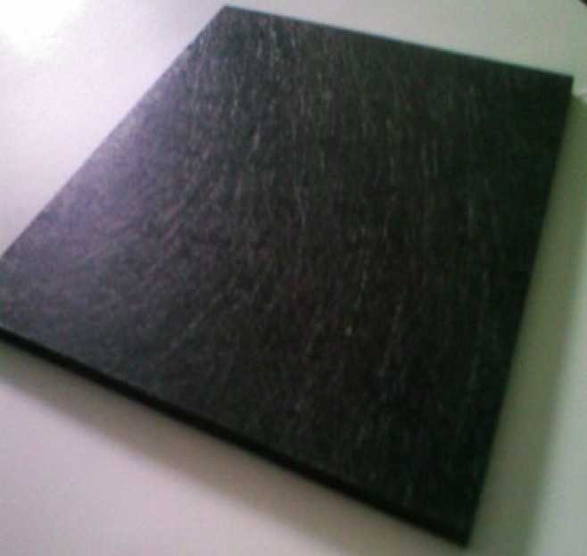
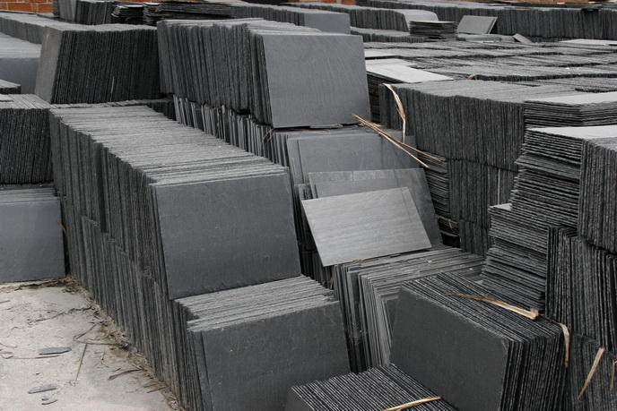

1、看表面结构
饰面石材品种较多，质量大不一样。如果用眼睛进行细查看便能鉴别其优劣。一般来说，均匀的细料结构的石材具有细腻的质感，为石材之佳品；粗糙及不等粒结构的石材其外观效果较差，机械力学性能也不均匀，质量稍差。另外，天然石材中由于地质作用的影响常在其中产生一些细脉动、级裂隙，石材易沿这些部位发生破裂，应注意要剔除。至于缺棱少角更是影响美观，选择这些石材尤应注意。
2、量尺寸规格
买石材时特别要注意其尺寸规格，可根据自己要装修的各个房间尺寸加以精心计算，以选购合适的规格。专家建议注意量好石材的尺寸规格，以免影响拼接，或造成拼接石材的图案、花纹、线条变形，影响装饰效果。
3、听敲击声音
敲击石材，其发出的声音情况也能辨别石材质量。一般而言，内部致密均匀且无裂隙的石材，其质量都较好，当受到敲击后会发出清脆悦耳的声音；相反，若石材内部存在显微裂隙或细脉或因风化导致颗粒间接触变松，则敲击后所发出的声音让人听起来感到粗哑。
4、试验质量好坏
这也是辨别石材的一种有效方法。这一方法，即是用简单的试验方法来检验石材质量好坏。通常在石材的背面滴上一小滴墨水，如墨水很快四处分散漫延，即表示石材内部颗料较松或存在显微裂隙，石材质量不好；反之，若墨水滴在原处不动，则说明石材结构致密质地好。
二、怎样区分进口与国产石材

目前我国进口石材一般是国内尚未有的品种，花纹、颜色独特；进口石材由流水线加工，平整，厚度较精确，一般为20mm厚，规格大；进口石材一般正面涂膜，有的背面有塑网。
三、如何区别人造石材、天然石材染色（加物）和天然石材

1、天然石材的自然花纹驱使人们去仿造它，尤其是在缺少矿山资源地区、人造石材产品看上去很逼真，但仔细观察，较易区别。
2、人造石材花纹无层次感、因层次感是仿造不出来的。
2.1 人造石材花纺、颜色是一样的，无变化。
2.2 人造石材板背面有模衬的痕迹。
3、天然石材染色（加物）如何识别
3.1 染色石材颜色艳丽，但不自然。
3.2 在板的断口处可看到染色渗透的层次。
3.3 染色石材一般采用石质不好、孔隙度大、吸水率高的石材，用敲击法即可辩别。
3.4 染色石材同一品种光泽度都低于天然石材。
3.5 涂机油以增加光泽度的石材其背面有油渍感。
3.6 涂膜的石材，虽然光泽度高，但膜的强度不够，易磨损、对光看有划痕。
3.7 涂蜡以增加光泽度的石材、用火柴或打火机烘烤、蜡面即失去，现出本来面目。
4、染色石材的分辨
在饰面石材中，石材的花色是决定品质的一个重要方面。为了追求好的价格，一些科研单位和石材加工商几年前就开始研究石材的染色技术，目前在市场上经常可以看到经过染色的石材板材，而且有的技术几乎能达到以假乱真的程度，其中尤以花风石石材品种最多。但是，这种染色的饰面石材大部分是没有经过耐久性实验的，通过长时间的风吹雨淋，千踏万磨，或多或少都会褪去一定的颜色，失去当初的装饰效果。所以，市场上染色石材还是很难为人们所接受。分辨这种染色石材的方法主要是仔细观察，由于花岗石石材多是由几种矿物构成的，矿物与矿物之间往往有明显的缝隙，在这种缝隙中很容易造成颜料的富集，如果在矿物之间发现了这种富集的颜料，那必是染色的石材。观察石材板材的侧面，不管花岗石石材的花色如何，天然未染色石材的侧面一般为白色，而经过染色的花岗石石材的侧面多呈现所用颜料的颜色。另外，染色石材的颜色总显得不太自然，给人以矫揉造作的感觉。